january 2006
I2C - Library
Introduction
The I2C_main library supports all I2C master functionality, both software and hardware I2C-port is supported and both high-level and low-level procedures are available. The high level procedures uses virtual I2C-devices and virtual I2C-ports, so it's very easy to switch between different devices or different ports. But if you're really interested in the low level details, you could read the I2C bus specifications.pdf first.
Starting with I2C devices often seems to be very difficult, and when you finally think you understand the I2C bus, and have your first I2C device working, connecting your second I2C device seems to start the problems all over again. Now with a short introduction, and the libraries described here, starting with I2C becomes very easy, and adding your second I2C device shouldn't give you many problems.
The first problem occures because most datasheets will try to explain subdetails, details and concept in just one figure. The second problem occures when connecting devices with different hardware specifications (speed, power supply, voltage levels).
So let's try to explain the I2C concept (not the details). Writing to or reading from an I2C device always consists of the following 3 parts:
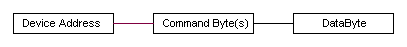
Device Address
1 byte, each type of I2C-component has a unique address. Sometimes a component may have a range of addresses, and the component gets its unique address by hardwiring some of its pins. (In case a device type has a range of addresses, you can connect more than 1 of such devices to the same I2C bus). The LSB of the device address also serves to indicate if the next bytes will be written to the device or read from the device (therefore a device will at least have 2 addresses, even and odd).
Command Bytes
After a device is addressed, you will send 1 or 2 command bytes to the device, to tell the device your intentions. E.g. for an eeprom you would give the eeprom-address where you want to write, for a graphical LCD you would specify the row and column where you want to put your data.
DataByte
The databyte to be written or read. Write of read is in general determined by the command bytes and or the LSB of the device address.
Examples
First a few examples to show how easy you can communicate with I2C devices, using this library. For the moment we forget about the initialization part and show some functional calls.
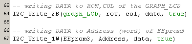
As you can see, you don't have to know anything about subdetails, like timing specifications, or about details like startbit, restartbit, stopbit, ackn, nack, r/w. Moreover these routines will just do their job. Take for instance the most often used eeproms, their write-time varies from 5 .. 10 msec, so after you've performed a write, you've to wait 5..10 msec, before you can initiate the next write. The I2C_Write_3 procedure solves in more convenient way, it will write as fast as possible, just by trying in a close loop to get in contact with the device as soon as possible. If the write doesn't succeed within 10 msec (the slowest memory available nowadays), or if the device cann't be found due to a hardware faillure, the function will return false.
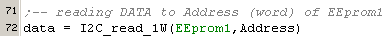
If you look in the datasheet of an I2C-EEprom, you'll see that a read is much more complicated than a write, involving a restart and sending the address twice. Nothing of this complexity can be found in the procedure above.
If we have to do a lot of sequential writing (or reading) to an I2C device, the above procedures are rather time-intensive, especially when using the old EEproms with their 5..10 msec write delay (the newer Ferro EEprom has a zero write delay). Therefore the somewhat lower level procedures are also available.
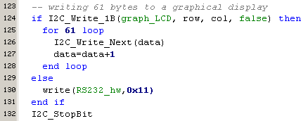
We're using the same write procedure as above, but the last parameter is false, meaning no stop bit will be transmitted. Now we can add a number of databytes with the procedure I2C_Write_Next, knowing the I2C device will accept that and autoincrement its internal address counter. Finally, when we're finished with our datastream we send a stopbit.Although the routines at this level will give you all flexibility you'll need, even the lower level routines are of course available.
Another example, to quickly test which I2C devices are available (and functioning under certain conditions) on our bus, we can use the following code:
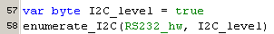
The procedure Enumerate_I2C will step through all I2C devices (only the even addresses will be tested) on the specified bus (in this case a I2C software port), and if an I2C device is responding, it will output the address to the RS232 hardware port. Because speed and bus level can be specified, this procedure can also be used to investigate your hardware under different conditions.
Initialisation
The initialisation of each I2C device is done fully under water, and the only thing that needs to be done, is the declaration of some device specific parameters.
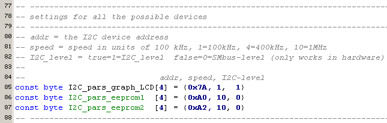
Above we see the definition for three I2C-devices, the first one is a graphical LCD, followed by 2 EEproms. The first parameter is the device-address, specified in the datasheet, sometimes in combination with some hardwired connections, like done for the EEproms. The second parameter is the speed (1=100kHz, 4=400kHz, 10=1 MHz), it's no problem to connect devices with different speed to the same bus. (The speed of the software bus is momentary fixed at 100 kHz). The last parameter selects the bus levels, 1 = I2C-levels, 0 = SMbus levels. Different bus levels may be mixed on the same I2C-bus. Generally you can use I2C-levels when the supply voltage of PIC and I2C device are equal and use SMbus levels if you use a 5Volt PIC and 3Volt I2C devices, but this is certainly not always true.
High level procedures
The high level procedures gives you only read/write access with just 1 databyte at a time. The big advantage is that it's very easy to use, the disadvantage is that there's a lot of overhead for each data transfer. The latter can be especially hinderly, if you've to write sequential data to old EEproms (5..10 msec per transfer).
The next image gives an overview of all the available high level procedures. The "stop" parameter, which sends a I2C stop sign, should always be true, a false value is only needed to use these same procedures at the medium level.
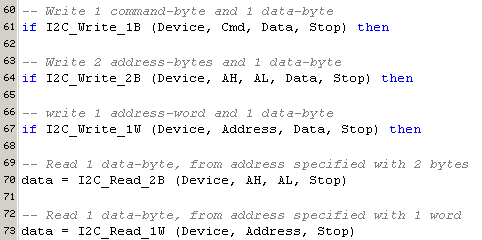
Medium level procedures
The medium level routines, are a little more difficult to use, but the main advantage is that you'll have full control over the I2C sequence and therefore you can create any data-transfer you like. The medium level procedures consists of the high level procedures (with stop parameter = false) and the next set of procedures.
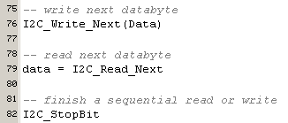
Here is an example of how to do a page write of 16 bytes (in one I2C sequence, so for EEprom this will only require 1 write delay of 5..10 msec) to an I2C device.
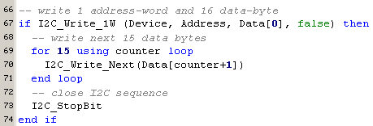
Also the test routines are available at the medium level, and now can test only the devices you specify. This might be handy, if you want to do an endurance test of 1 or more I2C devices at different conditions.
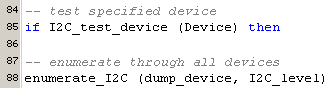
Low level procedures
The low level procedures are only to be used by experienced users, and for those the sourcefile will contain enough information. Therefore we only give an overview of the (highest) low level procedures, yes indeed there's even a lower level !!
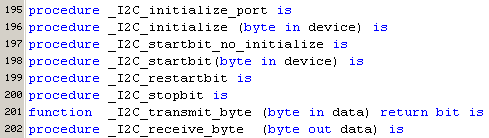
Library hierachy
Below the library hierachy is shown. For each project it's the best to make a local copy of I2C_console_defs, because this file contains a list of connected I2C devices and defines the pins for software I2C-communication. If you're using a new I2C device which is not yet definied in the I2C_console_defs file, it's adviced to first add the new device, before making a local copy. In that way the original I2C_console_defs file will always contain definitons for all devices you've ever used.
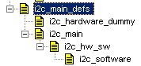 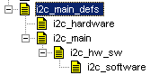
Adding new device
Adding a non-yet existing device to the library, you've to 3 simple steps:
1. add the device to the device list, with a unique name and unique number
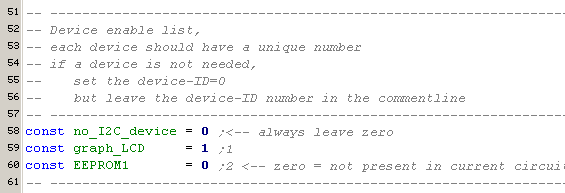
2. set the desired parameters for the device
3. add a small initialisation part to the procedure _get_I2C_parameters. This part is written so that will not consume any memory space if this device is not used.
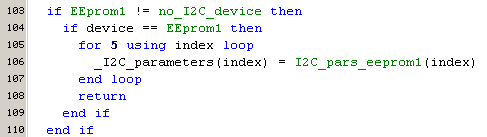
I2C software settings
Just assign the desired pin numbers to the following variables. If you don't use the software I2C module, you can simple assign any pin to these variables (the library will do nothing with it, but the compiler wants them).
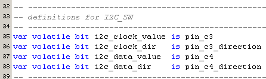